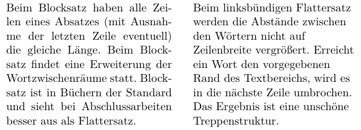
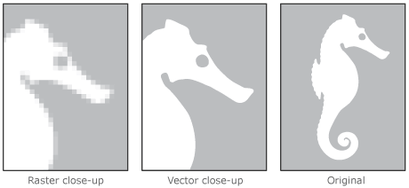
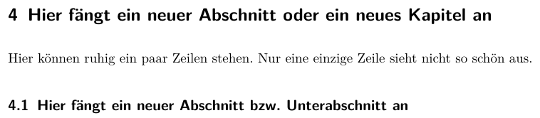
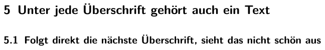
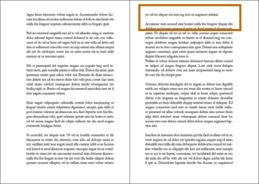
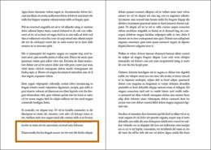

Das vorliegende Dokument soll Sie dabei unterstützen, häufige Fehler beim Anfertigen Ihrer Abschlussarbeit zu vermeiden.
Wie schreibt man eine gute Abschlussarbeit
Eine Bachelorarbeit, Diplomarbeit, Masterarbeit oder Doktorarbeit muss wissenschaftlichen Ansprüchen genügen. Die folgenden Punkte sollen Ihnen dabei helfen, die häufigsten Probleme und Fehler zu erkennen und von Anfang an zu umschiffen.
Organisatorisches
Sobald Sie scheinfrei sind, können Sie die Abschlussarbeit anmelden. Zuvor sollten Sie sich über folgende Punkte Gedanken machen:
- In welchem Themengebiet möchten Sie Ihre Abschlussarbeit schreiben? Es sollte ein Themengebiet sein, das Sie wirklich interessiert. Optimal ist es, wenn die Arbeit thematisch etwas abdeckt, was sie später beruflich machen wollen.
- Suchen Sie einen Professor, der als Hauptreferent bzw. Erstkorrektor Ihre Abschlussarbeit betreut. Zwischen Ihnen und Ihrem Hauptreferenten sollte es fachlich und menschlich passen. Perfekt ist es, wenn Ihr zukünftiger Hauptreferent im von Ihnen gewünschten Themengebiet tätig ist. Gehen Sie rechtzeitig (einige Wochen oder Monate vor Beginn der Arbeit) auf Ihren bevorzugten Hauptreferenten zu und sprechen Sie mit ihm. Das finale Thema finden dauert meist einige Tage und für Ihren zukünftigen Hauptreferenten ist es auch wichtig, dass er planen kann. Wenn Sie noch kein konkretes Thema haben, ist das kein Problem. Ihr Hauptreferent wird das Thema mit Ihnen ausarbeiten. Zumindest sollten Sie eine wage Idee haben, was Sie interessiert.
- Zusätzlich zum Hauptreferenten brauchen Sie einen Korreferenten. Dieser muss ebenfalls ein Mitglied der Hochschule sein. Ist der Korreferent kein Professor, muss er mindestens den akademischen Abschluss haben, den Sie im Rahmen der Abschlussarbeit anstreben.
- Beim Prüfungsamt bekommen Sie das Formular für die Anmeldung der Abschlussarbeit. Hauptreferent, Korreferent und Sie selbst müssen das Formular unterschreiben.
- Ab dem Zeitpunkt der Anmeldung haben Sie eine festgelegte Zeit bis zur Abgabe der fertigen, gedruckten Arbeit. Planen Sie die Bearbeitung der Arbeit so, dass Sie mit Ihrer Zeit auskommen. Das Sie vor der Anmeldung mit der Abschlussarbeit beginnen, ist offiziell nicht zulässig. Es kann Ihnen aber keiner verbieten, dass Sie sich vor der Anmeldung in das Thema einzuarbeiten und Literaturrecherche betreiben.
- Sprechen Sie Ihren Hauptreferenten bei Unklarheiten rechtzeitig an. Nach der Abgabe ist es dafür zu spät.
- Abhängig vom Fachbereich müssen Sie eine bestimmte Menge an gedruckten Exemplaren im Prüfungsamt abgeben. Klären Sie die benötigte Menge rechtzeitig. Inhalt, Sprache und Layout Ihrer finalen Arbeit sollten nach Möglichkeit tadellos sein und die Arbeit sollte wissenschaftlich korrektes Arbeiten erkennen lassen. Unterschätzen Sie nicht den Aufwand, all das zu berücksichtigen.
- Nach der Abgabe geben Sie dem Hauptreferenten und dem Korreferenten mindestens zwei Wochen Zeit um die Arbeit zu lesen. Dann sollten Sie mit dem Hauptreferent und dem Korreferent einen Termin für das Kolloquium suchen.
Aufbau der Abschlussarbeit (Thema, Inhalt, Ziel)
Machen Sie zu allererst einen Plan. Was sind Thema und Ziel der Arbeit. Der Inhalt muss klar eingegrenzt sein, und das sollte auch im Titel erkennbar sein. Wenn diese Punkte alle mit Ihrem Hauptreferenten abgeklärt sind, sind Sie auf der sicheren Seite. Der Aufbau sollte in etwa folgendem Schema folgen:
- Titelseite. Inhaltliche Vorgaben der Hochschule beachten.
- Eidesstattliche Erklärung. Vorgaben der Hochschule beachten.
- Danksagung. Nicht zu lang und nicht zu überschwänglich. Bedenken Sie beim Schreiben, dass der Text eventuell auch in Jahrzehnten noch gelesen wird. Heiße Liebesschwüre sind hier genau so unangebracht wie übertriebene Unterwürfigkeit. Beim Lesen der Danksagung durch Dritte sollte sich kein Fremdschämen einstellen. Betreiben Sie Recherche um zu sehen, welche Formulierungen angemessen sind.
- Zusammenfassung (deutsch). Maximal 1/2 bis 1 Seite. Auf das Ziel der Arbeit eingehen.
- Abstract (englisch). Die englische Übersetzung der Zusammenfassung.
- Einführung/Einleitung/Motivation. Hier leiten Sie in das Themengebiet ein und erklären, warum es sinnvoll ist, dass Sie diese Arbeit geschrieben haben.
- Stand der Technik. Beschreiben Sie den aktuellen Stand der Forschung und was bislang in Form von Lösungen und Produkten etabliert ist. Damit motivieren Sie, warum es überhaupt Sinn macht, dass Sie Ihre Lösung entwickeln und diese Arbeit schreiben. Es soll ja etwas Neues entstehen und dafür muss man wissen, was es in dem Bereich bislang gibt und wo noch Forschungsbedarf besteht. Dieses Kapitel ist extrem wichtig, denn Sie schreiben keinen Projektbericht, der sich nur um Ihre Lösung dreht, sondern eine wissenschaftliche Abschlussarbeit und da ist die Einordnung in den Stand der Technik wichtig. Konkret sollte dieses Kapitel folgendes beinhalten:
- Eine Beschreibung der Kriterien (z.B. Funktionalitäten, Anschaffungskosten, Kompatibilität zu speziellen Plattform), anhand derer Sie bestehende Lösungen untersuchen.
- Eine Aufstellung bereits existierender Lösungen, die die geforderten Anforderungen teilweise oder komplett erbringen.
- Eine Untersuchung der existierenden Lösungen anhand der von Ihnen aufgestellten Kriterien. Diese Untersuchung soll klar erkennbar werden lassen, warum Sie für Ihre Arbeit eine bestimmte Lösung verwendet , oder eine neue Lösung entwickelt haben.
- Eine knappe Beschreibung der von Ihnen verwendeten Technologien (z.B. Hardwarekomponenten, Programmiersprachen, Protokolle).
- Design (ihrer Lösung). Ab hier beginnt Ihre Eigenleistung und damit der Hauptteil Ihrer Arbeit. Beschreiben Sie mögliche Lösungen und entwickeln Sie Ihre Lösung. Dazu gehört auch die Argumentation warum Sie Ihre Lösung so und nicht anderes entwickelt haben.
- Implementierung. Hier beschreiben Sie Ihre Implementierung. Gehen Sie auf die wichtigen Teile Ihrer Eigenleistung ein. Längere (mehr als 1 Seite) Quelltexte gehören in den Anhang.
- Bewertung. Hier bewerten Sie die Ergebnisse Ihrer Arbeit. Auch Misserfolge und deren Gründe sind Ergebnisse und sollten Sie beschreiben.
- Zusammenfassung/Fazit/Ausblick. Hier fassen Sie die ganze Arbeit auf wenigen Seiten zusammen und geben neben einem Fazit einen Ausblick auf sinnvolle weitere Arbeiten.
- Anhänge. Hier können z.B. längere Quelltexte oder umfangreiche Messdaten erscheinen.
- Literaturverzeichnis. Versuchen Sie hochwertige Quellen wie Bücher, Zeitschriftenartikel und Konferenzbeiträge zu referenzieren. Geben Sie bei Webseiten das Datum des letzten Kontrollbesuches an.
Umfang
Wie viele Seiten sinnvoll sind, hängt immer vom Thema und Inhalt der Arbeit ab. Folgende Seitenzahlen sind nur unverbindliche Richtwerte:
- Bachelorthesis: 50 bis 80 Seiten
- Diplomarbeit: 70 bis 120 Seiten
- Masterthesis: 80 bis 140 Seiten
- Doktorarbeit: 120 bis 200 Seiten
Der Umfang ist kein Kriterium für die Qualität der Abschlussarbeit!
Bedenken Sie bitte auch, dass das Werk von Anderen gelesen werden soll.
Korrektes Arbeiten
- Vermeiden Sie Bewertungen, die sie nicht belegen und in Zahlen festmachen können. Formulierungen wie einfach, schwierig, langsam, schnell, günstiger Preis oder hoher Datendurchsatz sind nicht eindeutig und haben in einer Abschlussarbeit nichts zu suchen. Fragen Sie sich selbst: Wie viel ist viel? Wie viel Geld ist günstig? Wie viele MB/s sind schnell? Solche Formulierungen sind immer vom Kontext abhängig und nicht eindeutig. Wenn Sie etwas bewerten, muss es auf Basis von Quellen oder eigenen Messergebnissen geschehen. Ein Beispiel: Wie in [Quelle/Schaubild/Tabelle] dargestellt, weist XY im konkreten Fall einen 10% höheren Datendurchsatz auf als YZ.
- In deutschsprachigen Dokumenten schreibt man Währungssymbole nach dem Betrag (Beispiel: 10 €) mit einem geschützten Leerzeichen zwischen Währungssymbol und Betrag. Ein solches Leerzeichen darf nicht umbrochen werden. In englischsprachigen Dokumenten werden Währungssymbole vor den Betrag gesetzt (Beispiel: $10). Dabei wird kein Leerzeichen zwischen Währungssymbol und Betrag gesetzt.
- Das Dezimaltrennzeichen markiert die Grenze zwischen dem ganzzahligen Teil und dem gebrochenen Teil einer Zahl. In deutschsprachigen Dokumenten verwendet man ein Komma als Dezimaltrennzeichen (Dezimalkomma). In englischsprachigen Dokumenten verwendet man einen Punkt als Dezimaltrennzeichen (Dezimalpunkt).
- Bei großen Zahlen empfiehlt es sich zur besseren Lesbarkeit Tausendertrennzeichen zu verwenden. In deutschsprachigen Dokumenten verwendet man als Tausendertrennzeichen einen Punkt (Beispiel: 10.000 €) oder ein geschütztes Leerzeichen (Beispiel: 10 000 €). In englischsprachigen Dokumenten verwendet man als Tausendertrennzeichen ein Komma (Beispiel: $10,000).
- Wenn Sie wortwörtlich Texte übernehmen, machen Sie dies mit Einrückungen deutlich und geben Sie die Quelle an. In naturwissenschaftlichen Abschlussarbeiten sollte der Bedarf an solchen Zitaten aber eher gering sein, da in der Regel der Entwurf und die anschließende Implementierung einer Lösung der Kern der Arbeit ist. Auch wenn Sie Bilder oder Tabellen übernehmen, müssen Sie in der Bildunterschrift bzw. Tabellenüberschrift die Quelle angeben. Blöd ist, wenn man am Ende Quellenangaben vergessen hat. Darum empfiehlt es sich, dass Sie zur Sicherheit ihre eigene Arbeit mit Werkzeugen wie PlagScan untersuchen.
Qualität der Sprache
Qualität kommt von Qual und nicht der Leser soll sich quälen, sondern der Autor!
Sprache
- Formulieren Sie sachlich und präzise. Ihr Text sollte frei von weitschweifigen, prosaischen und umständlichen Formulierungen sein.
- Vermeiden Sie zu lange Sätze, die über mehrere Zeilen gehen. Der Text soll flüssig lesbar sein.
- Formulieren Sie aktiv. Das erreichen Sie, indem Sie Wörter wie wird, wurde und werden vermeiden.
- Vermeiden Sie in einer deutschsprachigen Abschlussarbeit unnötige Anglizismen. Wörter wie Webseite, E-Mail, Server und Browser stehen im Duden und sind quasi eingedeutscht. Für zahlreiche andere Wörter in der Informatik existieren seit Jahrzehnten etablierte deutsche Begriffe. Es bietet sich an, diese auch zu verwenden. Die Tabelle am Ende dieser Seite enthält einige Beispiele.
- Schreiben in der dritten Person. Das heißt Sie vermeiden die Ich-Form (z.B. Ich habe den Datendurchsatz mit xyz gemessen...) und das direkte Ansprechen des Lesers (z.B. in meiner Arbeit sehen Sie...). Wahren Sie Distanz zum Leser (z.B. Die Messung des Datendurchsatzes mit xyz ergab...).
- Verfallen Sie im Überschwang nicht in Werbesprache (BlaBla),
indem Sie bestimmte Produkte oder Unternehmen euphorisch anpreisen. Wenn Sie Abschnitte mit Werbetexten von amerikanischen Produktseiten übersetzen und einbauen, merkt der Leser das.
- Bei eigenen Werken wird man als Autor mit der Zeit betriebsblind und ließt über schlechte Formulierungen hinweg. Wenn Sie mit der Arbeit inhaltlich fertig sind, lesen Sie sich die Arbeit von Anfang bis Ende einmal selbst laut vor. Schlechte Formulierungen und Wortwiederholungen erkennen Sie so sofort.
Rechtschreibung
- Bitten Sie Angehörige und Kommilitonen um Korrekturlesen. Diese Personen sollten natürlich die Rechtschreibung beherrschen. Wenn nötig, besorgen Sie sich geeignete Software (z.B. von Duden).
- Vermeiden Sie den Deppenapostroph.
- Beachten Sie die korrekte Verwendung des Bindestrichs. Merke: Wenn Sie ein englisches Wort mit einem deutschen Wort verbinden, brauchen Sie zwingend einen Bindestrich. Beispiele: Cloud-Dienst, Grid-Ressource und Client-Server-Anwendung.
Form
- Die Bedeutung von Abkürzungen müssen Sie bei deren erstmaligen Verwendung erklären. Verwenden Sie zahlreiche Abkürzungen in Ihrer Abschlussarbeit, empfiehlt sich ein Glossar am Ende des Dokuments.
- Unterscheiden Sie auch zwischen Bindestrich und Gedankenstrich.
LaTeX oder Word
Mit welchem System Sie Ihre Arbeit schreiben,ist Ihnen überlassen. Besonders in den Naturwissenschaften hat das Textsatzsystem LaTeX beliebt und es erzeugt das beste Schriftbild. Allerdings ist die Einarbeitungszeit in LaTeX höher als bei grafischen Schreibprogrammen wie Word. Ein Rat: Unzählige LaTeX-Vorlagen für Abschlussarbeiten sind online verfügbar. Suchen Sie sich eine optisch ansprechende Vorlage aus und bauen Sie auf dieser auf.
Layout
- Achten Sie auf einen ausreichend großen Rand. Dieser erleichtert die Korrektur der Arbeit und wertet diese optisch auf. Es ist kein Ziel Ihrer Arbeit, möglichst viel Text auf eine Seite zu quetschen.
- Verwenden Sie Blocksatz (siehe Abbildung 1) und keinen Flattersatz.

Abbildung 1: Vergleich von Blocksatz und Flattersatz
Bildquelle: Eigenes Werk
- Verwenden Sie eine Schrift mit Serifen (siehe Abbildung 2).
Abbildung 2: Vergleich einer Serifen-Schrift mit einer serifenlose Schrift
Bildquelle: Eigenes Werk
- Abbildungen fügen Sie, wenn möglich, als Vektorgrafiken ein. Besonders bei selbst erstellten Diagrammen ist das problemlos möglich. Vektorgrafiken können im Gegensatz zu Rastergrafiken ohne Qualitätsverlust stufenlos und verlustfrei skaliert werden (siehe Abbildung 3). Dateiformate für Vektorgrafiken sind u.a. EPS, PS, PDF und SVG. Dateiformate für Rastergrafiken sind u.a. BMP, GIF, JPG und PNG.

Abbildung 3: Vergleich einer Rastergrafik mit einer Vektorgrafik
- Absätze sollten nicht zu lang sein, aber auch nicht nur aus einem einzelnen Satz bestehen (siehe Abbildung 4).

Abbildung 4: Vergleich einer Rastergrafik mit einer Vektorgrafik
Bildquelle: Eigenes Werk
- Unter jede Überschrift gehört ein Text. Es sollte zum Beispiel nicht direkt unter einer Kapitelüberschrift die Überschrift eines Abschnitts folgen (siehe Abbildung 5).

Abbildung 5: Hier fehlt ein Text zwischen den beiden Überschriften. Das sieht unprofessionell aus
Bildquelle: Eigenes Werk
- Vermeiden Sie Hurenkinder (siehe Abbildung 6) und Schusterjungen (siehe Abbildung 7). Diese Begriffe bezeichnen den Makel beim Textsatz, wenn eine Seite mit der ersten Zeile eines Absatzes endet (so genannter Schusterjunge) oder eine neue Seite mit der letzten Zeile eines Absatzes beginnt (so genanntes Hurenkind).

Abbildung 6: Beispiel für ein Hurenkind

Abbildung 7: Beispiel für einen Schusterjungen
- Alle Kapitel sowie eidesstattliche Erklärung, Danksagung, Zusammenfassung, Anhänge und Literaturverzeichnis fangen auf neuen Seiten an.
- Drucken Sie die Arbeit einseitig und nicht doppelseitig. Ein einseitiger Druck erleichtert die Korrektur und sieht besser aus.
- Bei einer doppelseitig gedruckten Arbeit fangen alle Kapitel sowie Eidesstattliche Erklärung, Danksagung, Zusammenfassung, Anhänge und Literaturverzeichnis auf ungeraden Seiten (also auf rechten Seiten) an. Bei einer einseitig gedruckten Arbeit ist das egal, denn Ihre Arbeit sollte keine leeren Seiten enthalten.
- Jede Abbildung benötigt eine Bildunterschrift mit eindeutiger Nummer und muss im Text referenziert sein.
- Jede Tabelle benötigt eine Tabellenüberschrift mit eindeutiger Nummer und muss im Text referenziert sein.
- Jeder Quellcodeabschnitt benötigt eine Unterschrift mit eindeutiger Nummer und muss im Text referenziert sein.
- Schreiben Sie Abkürzungen wie z.B., d.h. oder u.a. aus. Das verbessert die Lesbarkeit und den optischen Eindruck. Vermeiden Sie auch Abkürzungen wie Abb. für Abbildung oder Tab. für Tabelle.
- Achten Sie darauf, dass die Schriftgröße in Abbildungen nicht zu klein ist und eine gute Lesbarkeit gegeben ist.
Abschlussarbeit in Zusammenarbeit mit einem Unternehmen
Zahlreiche Abschlussarbeiten werden in Zusammenarbeit mit Unternehmen geschrieben werden. Positiv hierbei ist:
- Sie bekommen einen Einblick in ihren späteren Berufsalltag.
- Sie finden eventuell ihren künftigen Arbeitgeber. In diesem Fall sind Sie nach dem Ende Ihres Studiums auch schon eingearbeitet und im Unternehmen etabliert.
- Sie können während der Arbeit an ihrer Abschlussarbeit etwas verdienen. Ein monatliches Gehalt oder zumindest eine Einmalzahlung ist üblich und angemessen.
Leider gibt es häufig auch negative Begleiterscheinungen:
- In zahlreichen Unternehmen fällt die Betreuung der Werksstudenten in den Aufgabenbereich einer einzelnen Person. Mit dieser Person, die Sie beim Bewerbungsgespräch üblicherweise kennenlernen, sollten Sie sich auf menschlicher und fachlicher Ebene gut verstehen. Fällt diese Person z.B. durch Krankheit oder einen Weggang aus, ist eine optimale Betreuung häufig nicht mehr gewährleistet.
- Zahlreiche Unternehmen verlangen, dass Sie vertraglich auf die Verwertungsrechte an der von Ihnen erstellten Software zu verzichten. Einige Unternehmen versuchen sogar Sperrvermerke oder Vertraulichkeitserklärungen durchzusetzen, worauf Sie sich auf keinen Fall einlassen sollten!
Bieten gewinnorientierte Unternehmen die Betreuung von Abschlussarbeiten an, ist das Motiv meistens Eigennutz und nicht Menschenliebe. Aus Sicht eines Unternehmen ist die Finanzierung und Betreuung Ihrer Abschlussarbeit ein gutes Geschäft, denn das Unternehmen bekommt die Arbeitsleistung eines (angehenden) Akademikers zum Bruchteil des Gehalts, das ein Angestellter oder Subunternehmer für die gleiche Arbeit verlangt. Zudem gibt es häufig weder Kündigungsfristen, noch Sozialleistungen. Sie müssen bei Bewerbungsgesprächen also nicht als Bittsteller auftreten. Sprechen Sie die Möglichkeit einer späteren Anstellung an. Merken Sie im Verlauf des Bewerbungsgesprächs, dass Sie nach ihrer Abschlussarbeit keine Zukunft im Unternehmen haben, müssen Sie sich überlegen, ob Sie nicht besser gleich etwas anderes suchen.
Kommunizieren Sie im Unternehmen wann immer nötig klar und deutlich, dass die Hochschule mit dem Unternehmen gar nichts zu tun hat und das Sie in erster Linie an Ihrer Abschlussarbeit arbeiten wollen. Das Unternehmen hat keinen Einfluss auf die Notengebung und Sie alleine entscheiden wenn die Arbeit abgegeben ist, ob und welche Vertreter des Unternehmens als Gäste beim Kolloquium zugelassen sind. Die Interessen des Unternehmens sind für die Hochschule irrelevant und sollten für Sie zweitrangig sein. Das Ziel einer sehr guten Abschlussarbeit sollte für Sie oberste Priorität haben. Lassen Sie sich darum nicht zu viel für Tätigkeiten einspannen, die von der Arbeit an Ihrer Abschlussarbeit ablenken.
Sperrvermerk / Vertraulichkeitserklärung / Non Disclosure Agreement
Wird eine Abschlussarbeit in einem Unternehmen geschrieben, kann es vorkommen, dass von Seiten des Unternehmens ein Sperrvermerk in der Abschlussarbeit angeregt wird, der die nachträgliche Veröffentlichung an der Bibliothek oder an anderer Stelle untersagt. Es gibt auch Unternehmen, die in der Vergangenheit eine Vertraulichkeitserklärung (NDA = Non Disclosure Agreement) verlangt haben.
Solche Praktiken sind nach meiner Überzeugung generell abzulehnen und ich betreue keine Abschlussarbeiten mit Sperrvermerk. Ebenso weigere ich mich irgendeine Vertraulichkeitserklärung zu unterzeichnen. Eine Auswahl guter Gründe für diese Haltung:
- Abschlussarbeiten müssen nicht zwingend geheime Daten eines Unternehmens enthalten.
- Wurden im Rahmen der Arbeit personenbezogene Daten verwendet, können für die visuelle Präsentation in der Arbeit und im Kolloquium pseudonymisierte oder anonymisierte Daten verwendet werden.
- Sucht der Autor eine neue Anstellung, kann seine Abschlussarbeit mit Sperrvermerk auf legalem Wege nicht Teil der Bewerbungsunterlagen sein.
- Eine spätere Verwertung der Ergebnisse der Abschlussarbeit z.B. in Form von Zeitschriftenartikeln oder als Grundlage einer späteren Selbständigkeit ist für den Autor unmöglich.
- Abschussarbeiten die nicht zugänglich sind, erschweren die Suche nach Plagiaten.
Zum Thema Sperrvermerke empfehle ich den Kommentar "Sperrvermerke bei Abschlussarbeiten" von Nane Kratzke, der im Informatik-Spektrum (Springer-Verlag), Ausgabe 5/2015, Seite 409-413, erschienen ist.
Zeit
Fangen Sie nicht zu spät mit Ihrer Arbeit an. Ein gutes Quellenstudium erfordert mehrere Tage. Probleme bei der Implementierung können jeden Zeitplan obsolet machen. Das Gleiche gilt für unvorhergesehene Ereignisse im persönlichen Umfeld oder Krankheiten. Beginnen Sie die Arbeit daher möglichst zügig und planen Sie am Ende mindestens eine Woche für das Korrekturlesen, Drucken und Binden ein.
Kolloquium / Verteidigung
Beim Kolloquium verteidigen Sie Ihre Abschlussarbeit. Das bedeutet, dass Sie einen Vortrag (in der Regel mit Präsentationsfolien) halten. Teil Ihres Kolloquiums sollte immer auch eine Live-Demonstration der von Ihnen erstellen oder untersuchten Software und/oder Geräte sein. Vortrag und Live-Demonstration sollten zusammen nicht mehr als 35-40 Minuten in Anspruch nehmen.
Im Vortrag sollen Sie auf keinen Fall die komplette Arbeit zusammenfassen! Der Schwerpunkt soll Ihre Eigenleistung sein. Ein sinnvoller Aufbau des Vortrags könnte wie folgt aussehen:
- Deckfolie mit dem Titel der Arbeit, Name, Matrikelnummer, etc. (1 Folie)
- Agenda (1 Folie)
- Problembeschreibung (1-2 Folien)
- Untersuchte Lösungsmöglichkeiten (1-2 Folien)
- Bewertung der untersuchten Lösungsmöglichkeiten (1-2 Folien)
- Ihre gewählte, entwickelte und realisierte Lösung (2-4 Folien)
- Ergebnis / Fazit (1-2 Folien)
Wenn Sie diesem Aufbau folgen, kommen Sie mit 10-15 Folien aus. Bedenken Sie, dass Sie für die Präsentation pro Folie ca. 1,5 bis 2,5 Minuten brauchen. Folgende Hinweise können Ihnen helfen gute Präsentationsfolien zu erstellen:
- Lockern Sie die Folien mit Bildern und Diagrammen auf, weil Textwüste das Auditorium einschläfert.
- Große Mengen Quellcode und umfangreiche UML-Diagramme haben auf Folien nichts zu suchen, da sie in der Kürze der Zeit nicht erfasst werden können.
- Achten Sie darauf, dass die Schrift immer ausreichen groß ist. Auch in den hinteren Reihen soll der Inhalt Ihrer Folien erkennbar sein.
- Verwenden Sie wenn möglich Vektorgrafiken, damit die Abbildungen nicht pixelig sind.
- Halten Sie den Hintergrund neutral. Vermeiden Sie bunte Hintergründe, weil das nur ablenkt und meistens billig und unseriös aussieht.
- Verwenden Sie eine Schrift ohne Serifen. wie z.B. Helvetica und nicht eine Serifen-Schrift wie z.B. Times.
- Die Quellen von Inhalten fremden Ursprungs (z.B. Texte oder Abbildungen von anderen Autoren) in den Präsentationsfolien müssen auf den Folien angegeben werden.
Präsentationsfolien können Sie z.B. mit LaTeX Beamer, OpenOffice, LibreOffice oder Microsoft PowerPoint erstellen.
Erscheinen sie mindestens 15 Minuten vor dem vereinbarten Zeitpunkt, damit Ihr Laptop pünktlich startbereit und alles fertig aufgebaut sein. Bedenken Sie, dass Netzwerkeinstellungen und Bildschirmausgabe (Beamer!) an einem für Sie ungewohnten Ort Probleme machen können. Üben Sie daher die Präsentation mit Freunden am besten vor Ort.
Ein Handout kann bei technisch komplexen Themen hilfreich sein, ist aber nicht zwingend nötig.
Im Anschluss an Ihre Präsentation und die Live-Demonstration werden der Hauptreferent und Korreferent Ihnen Fragen zum Inhalt Ihrer Arbeit stellen. Dabei versucht man dem Referenten auf den Zahn zu fühlen. Nach der Fragerunde beraten sich Hauptreferent und Korreferent unter vier Augen über die Bewertung Ihrer Leistung. Abschließend wird Ihnen die Note mitgeteilt und begründet, wie es zu der Leistungsbewertung gekommen ist.
Sie alleine entscheiden, ob bei Ihrem Kolloquium Gäste und wenn ja, welche Gäste zugelassen sind. Von der Anwesenheit der Eltern oder sonstiger Verwandter rate ich ab, weil diese emotional stark involviert sind und besonders bei Fragen mitleiden. Auch für den Referenten ist es unangenehm, wenn vor den eigenen Eltern eventuelle Unstimmigkeiten oder Wissenslücken erkennbar werden.
Verwertung von Ergebnissen der Arbeit
Das Schreiben einer guten Abschlussarbeit kostet Zeit und viel Kraft. Haben Sie eine interessante Arbeit geschrieben, wäre es schade, wenn Sie die Ergebnisse nicht veröffentlichen und gewonnene Erkenntnisse nicht weiter propagieren.
Haben Sie beispielsweise eine Software geschrieben, veröffentlichen Sie diese unter einer freien Lizenz z.B. bei GitHub, Bitbucket oder GNU Savannah oder einer vergleichbaren Anlaufstelle. Bei späteren Bewerbungen macht das einen sehr guten Eindruck. Dort können Sie auch Ihre Abschlussarbeit als PDF-Datei veröffentlichen.
Fragen Sie bei Zeitschriften an, ob Interesse an einem Artikel über Ihr Thema besteht. Je nach Zeitschrift und Verlag können Sie 80-200 € pro Seite im Heft verdienen. Wenn Sie im Thema eingearbeitet sind und Ihnen das Schreiben keine Probleme bereitet, ist das leicht verdientes Geld. Ein Artikel in einer Fachzeitschrift kann bei späteren Bewerbungen auch hilfreich sein.
Vermeidbaren Anglizismen (kleine Auswahl)
Diese Tabelle enthält einige Beispiele für unnötige Anglizismen in deutschsprachigen Abschlussarbeiten. Existieren etablierte deutsche Begriffe, sollten Sie diese auch verwenden.
| Anglizismus |
deutscher Begriff |
| Account |
Konto oder Benutzerkonto |
| Application oder Applikation |
Anwendung |
| Button |
Schaltfläche |
| CIO |
EDV-Leiter |
| Disk oder Harddisk |
Festplatte |
| Exception |
Ausnahme oder Ausnahmesituation |
| File |
Datei |
| Filesystem |
Dateisystem |
| Game |
Computerspiel |
| Infrastructure |
Infrastruktur |
| Library |
Bibliothek |
| Memory |
Speicher |
| Message Queue |
Nachrichtenwarteschlange |
| Open Source |
Quelloffene Software oder freie Software |
| Overhead |
Leistungsverlust |
| Performance |
Geschwindigkeit |
| Playliste |
Wiedergabeliste |
| Provider |
Anbieter |
| Queue |
Warteschlange |
| Rebuild-Zeit |
Wiederherstellungszeit |
| Request |
Anfrage |
| Response |
Antwort |
| Screen |
Bildschirm |
| Service |
Dienst |
| Service Level |
Dienstgüte |
| Service Level Agreement |
Dienstgütevereinbarung |
| Shared Memory |
Gemeinsamer Speicher |
| Shell |
Kommandozeile |
| Source Code |
Quelltext |
| Stateful |
Zustandsbehaftet |
| Stateless |
Zustandslos |
| User |
Benutzer |
| User Account |
Benutzerkonto |
{kind=link}